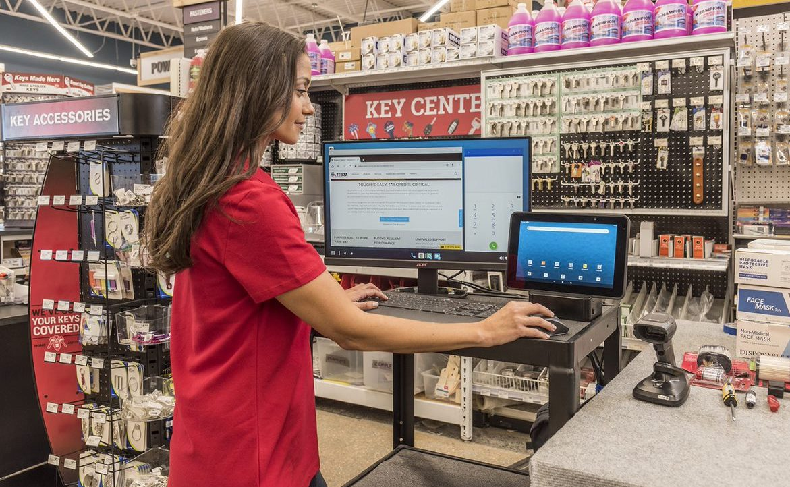

See what's new in ZWC 5.1
Overview
Zebra Workstation Connect (ZWC) is a hardware and software solution for select Zebra devices running Android that allows a mobile device to provide a desktop-like experience on an external display. The solution includes Zebra's Workstation Connect Cradle and Point of Sale Connect Cradle, which provide connections to an HDMI external monitor, wired Ethernet and four USB ports for attaching a keyboard, mouse and other peripherals. Learn more about Zebra Workstation Connect cradles.
 Click image to enlarge; ESC to exit.
Click image to enlarge; ESC to exit.
Key applications for ZWC include retail, healthcare, warehousing, transportation, public safety and many others. ZWC leverages Android Desktop Mode to present a “desktop-like” experience on an external monitor, enabling the user to launch different sets of apps and content on the device and monitor screens. The solution also supports Screen Mirroring Mode, which displays the same content on both screens.
New in ZWC v5.1
- Adds support for the following devices† running Android 14:
- EM45, EM45 RFID
- ET60, ET65
- HC20*, HC50
- TC22*, TC27*
- TC53, TC58, TC73, TC78
See all supported Zebra devices
- Adds support for Imprivata SSO log-in. See Imprivata SSO usage notes.
- Discontinues the following features:
- Notification panel
- Admin configuration of “Monitor size” (Zebra recommends using “Screen Size (inches)” instead)
- Admin configuration of Desktop shortcuts via package/activity names (Zebra recommends using “Shortcut import file” instead)
- Supports COPE Mode on 4490-platform devices running Android 13. See COPE Mode usage notes.
† Devices also compatible with “Work profile for mixed-use company-owned devices” (previously known as COPE, or “Corporate Owned, Personally Enabled”) features.
For devices running Android 14, minimum LifeGuard software updates required:
| Device Platform (models) | Required Update |
|---|---|
5430 (NEW: EM45, EM45 RFID, TC22*, TC27*) |
14-28-03.00-UG-U60-STD-ATH-04 (or later) |
6490 (NEW: ET60, ET65, HC20*, HC50, TC53, TC58, TC73, TC78) |
14-28-03.00-UG-U60-STD-ATH-04 (or later) |
For devices running Android 13, minimum LifeGuard software updates required:
| Device Platform (models) | Required Update |
|---|---|
| 4490 (TC53e, TC58e) | 13-28-21.00-TG-U00-STD-NEM-04 (or later) |
| 5430 (TC22*, TC27*) | 13-32-21.00-TG-U00-STD-ATH-04 (or later) |
| 6375 (ET40*, ET40-HC*, ET45*, ET45_HC*) | 13-39-12.00-TG-U00-STD-GSE-04 (or later) |
| 6490 (ET60, ET65, HC20*, HC25*, HC50, HC55, TC22*, TC27*, TC53, TC58, TC73, TC78) | 13-40-29.00-TG-U00-STD-ATH-04 (or later) |
| SDM660 (EC50, EC51, ET55, ET56, L10, TC21*, TC21-HC* TC26*, TC26-HC* TC52, TC52x, TC52x-HC, TC52ax, TC52ax-HC, TC57, TC57x) |
13-38-24.01-TG-U00-STD-HEL-04 (or later) |
For devices running Android 11, minimum LifeGuard software updates required:
| Device Platform (models) | Required Update |
|---|---|
| 6375 (ET40*, ET40-HC*, ET45*, ET45_HC*) | 11-38-25.00-RN-U00-STD-GSE-04 (or later) |
| 6490 (TC53, TC58, TC73, TC78) | 11-42-08.00-RG-U00-STD-ATH-04 (or later) |
| SDM660 (EC50, EC55, ET51, ET56, L10, TC21*, TC21-HC* TC26*, TC26-HC* TC52, TC52x, TC52x-HC, TC52ax, TC52ax-HC, TC57, TC57x) |
11-58-08.00-RG-U00-STD (or later) |
* Indicates a Zebra Professional-series device; Mobility DNA Enterprise license purchase required for ZWC. Learn more about Zebra licensing.
ZWC and Desktop Mode
Desktop Mode allows an external monitor to appear to work independently of the mobile device, displaying a separate set of apps and data from the mobile device. In this mode, all running apps can accept input from a connected keyboard and mouse as well as the device touch screen and a touch-enabled monitor, if so equipped.

Desktop Mode can display different sets of apps on the device and monitor.
Click to enlarge; ESC to exit.
This is made possible by Zebra Workstation Connect, a desktop launcher for Android that executes automatically whenever a device containing the ZWC app is inserted into a Zebra Workstation Connect Cradle or Point of Sale Connect Cradle. ZWC handles all communications through the dock, presents the preferred desktop on the external monitor and stores the display resolution settings, app shortcuts and all other user preferences.
The "Desktop" with taskbar, running apps, shortcuts, settings icons and notifications.
Clicking the "All Apps" button (arrow, lower left) displays apps accessible on the device.
Click to enlarge; ESC to exit.
Workstation Connect in Desktop Mode includes all features of Mirror Mode and also can display:
- A "Desktop" screen with custom wallpaper
- Content on the external monitor unique from the device
- Notifications from the device
- Device settings such as audio volume, network and battery status
- Icons of running apps with click-to-switch functionality
Workstation Connect in Desktop Mode also allows an administrator to:
- Create actions (i.e. launch an app) to execute when docking or undocking
- Configure app launch behavior for Desktop vs. device
- Configure ZWC settings remotely using StageNow or an EMM system
Workstation Connect in Desktop Mode allows the device user to:
- Switch between running apps by clicking icons on the taskbar
- Create and display app-launcher icons (shortcuts) on the desktop
- Move running apps from device to Desktop and vice-versa
- Respond to notifications
- Show and change audio volume, date and time and network settings and Wi-Fi connections
- Show charging and status of device battery
ZWC and Mirror Mode
Mirror Mode displays the same content on the monitor as on the device. The only difference between the two is the orientation, which is adjusted to display content in landscape mode on the monitor from the vertically oriented device. Supported devices will use Mirror Mode by default whenever they're docked in a Workstation Connect Cradle or Point of Sale Connect Cradle that's connected to an HDMI monitor.
This mode offers the easiest setup; after installing the required OS on one or more supported devices and connecting a keyboard, mouse and monitor to a Workstation Connect Cradle or Point of Sale Connect Cradle, setup is complete. If Mirror Mode functionality is adequate for the intended use case, no further configuration is required.
For access to Desktop Mode and additional features, including the ability to remotely configure ZWC settings on the device, install the Workstation Connect app.
Version History
Added in ZWC v4.1
March 2025 Update
Supports Windows App for Android
Click image to enlarge; ESC to exit.
Zebra mobile computers and tablets running Android now support Windows App, which provides remote access to the Windows desktop environment and Windows apps from an Android device. Windows App (formerly Remote Desktop) is available on Google Play.
Learn more about Windows app.
Introduced with ZWC 4.1
- Allows apps to be preconfigured to run in landscape or portrait orientation
- Supports COPE Mode, also known as "Work profile for mixed-use company-owned" (WPCO) mode.†
- COPE Mode is supported on the following devices running Android 13 or later:
- HC20*
- HC50
- TC22*
- TC27*
- TC53
- TC58
- TC73
- TC78
- COPE Mode adds numerous new behaviors and controls.
See COPE Mode usage notes for details.
Added in ZWC v3.1
- Supports Android Lock-task mode, which limits device usage to a single app or small set of apps.
See Lock-task Mode usage notes for important support and behavior information.
Added in ZWC v3.0
- Added support for Zebra devices running Android 13
- Added section on Android 13 usage
Added in ZWC v2.0
- Secondary display settings are now configurable through the Workstation Connect UI
- Administrators can now elect to hide the soft input panel (SIP) icon on the taskbar, preventing users from making changes to admin-configured settings
- Administrators also can now block access to the SIP settings UI when the icon is shown. In this state, hovering over the icon displays the currently selected soft keyboard.
- Supports additional protocols for use with web-linked shortcuts
- Removes limitation to HTTP or HTTPS protocols for shortcuts
- Supports secure mass deployment of configuration files through Zebra SSM
- Can export JSON file set from a Managed Configuration using the Workstation Connect UI
- Adds "Do Not Change" option for configuring some settings without affecting all
- Toggles between Mirror Mode and Desktop Mode without a device reboot
- User can now configure display settings from the ZWC UI
- Now supports the Zebra MP7000 Grocery Scanner Scale on 6490-platform devices running Android 11
ZWC 2.0 is available from Google Play or the Zebra Support Portal.
Added in ZWC v1.7
- Set monitor resolution and content size as automatic (admin only)
- Create desktop shortcuts using Android Intents to trigger specific actions
- Return output from applied Managed Configurations to originating EMM
- Automatically hide/show the taskbar when an app enters/exits immersive mode (admin only)
ZWC 1.7 is available from Google Play or the Zebra Support Portal.
Supported Devices
ZWC 1.7 adds support for the following cradled Zebra devices with the corresponding LifeGuard update as shown below.
| Supported Device(s) | Minimum LifeGuard Update |
|---|---|
| EC50, EC55 ET51, ET56 L10 TC21*, TC26* TC52, TC57 |
11-31-27.00-RG-U00-STD-HEL-04 |
| ET40*, ET45* | 11-19-13.00-RG-U00-STD-GSE-04 |
| TC52ax, TC52ax-HC, TC52x, TC52x-HC TC57x |
11-33-08.00-RG-U00-STD-HEL-04 |
| TC53, TC58, TC73, TC78 | 11-19-15.00-RG-U00-STD-ATH-04 |
Added in ZWC v1.6
- Configuration changes can be implemented immediately or on next docking
- Simplified shortcut deployment process
- Screen size (in inches) can be set for monitor to be used
- Using Chrome, open web pages in current tab without creating a new tab
- Unlock device from secondary screen
- Configure NumLock and shortcut key actions on external keyboard using MX UI Manager
ZWC 1.6 is available from Google Play or the Zebra Support Portal.
Supported Devices
ZWC 1.6 added support for cradled devices with the corresponding update as shown below.
Some devices might require purchase of an additional license.
| Supported Device(s) | Minimum LifeGuard Update |
|---|---|
| EC50, EC55 ET51, ET56 L10 TC21*, TC26* TC52, TC52ax, TC52ax-HC, TC52x, TC52x-HC TC57, TC57x |
11-30-24.00-RG-U00-STD-HEL-04 |
| ET40*, ET45* | 11-17-20.00-RG-U00-STD-GSE-04 |
| TC53, TC58, TC73, TC78 | 11-17-16.00-RG-U00-STD-ATH-04 |
Added in ZWC v1.5
- Reset Configuration option allows users to reset Managed Configuration to Out-of-Box state
- Custom Shortcut Icons allow the admin to create shortcuts with a custom image file
- Drag and Drop Shortcuts between Group Shortcut Folders to help improve user productivity
- Supports DS3678-SR and DS2278 scanners connected via Workstation Connect Cradle or Point of Sale Connect Cradle
- New Usage Notes have been added in Administration/EMM and Screen Resolution sections
ZWC 1.5 requires LifeGuard update 11-25-18.00-RG-U00-STD-HEL-04 or later.
ZWC is supported only on select Zebra devices
Added in ZWC v1.4
- Additions to Development Best Practices for password display, making camera apps, querying the monitor
- Increased administrative control to show/hide desktop UI elements:
- Shortcuts
- Desktop wallpaper
- Contextual menus
- Notification panel
- Taskbar
- Notification badges now appear on app taskbar icons
- Control whether apps run in a movable/resizable window
- Configure soft input panel (SIP) on secondary display
- Enable specific app behaviors to persist following an Enterprise Reset
ZWC 1.4 requires LifeGuard update 11-23-13.00-RG-U00-STD-HEL-04 or later.
Added in ZWC v1.3
- Now supports Shortcut Grouping, adding the ability to:
- Create/delete named shortcut folders
- Add/remove shortcuts in the shortcut folder
- Click on a shortcut folder to display its contents in a window
- Drag shortcuts from the desktop into an open shortcut folder window
- Drag a shortcut from an open shortcut folder window to the desktop
- Now supports Copy Screenshot to Clipboard, adding the ability to:
- Copy screenshots to the clipboard for pasting into email and other supported apps
ZWC 1.3 requires LifeGuard update 11-20-18.00-RG-U00-STD-HEL-04 or later.
Added in ZWC v1.2
Administrative features now support:
- MX/Audio Volume UI Manager for setting min/max volume settings for apps running on desktop
- Monitor density settings
- Automatic dimming/disabling of mobile device screen
- Show/hide specific running apps in Desktop Taskbar
User features:
- "Relaunch and Reset" Action for apps running on Desktop
- Web, File, Static and Dynamic shortcuts on the Desktop
- Keyboard shortcuts added:
- PRTSCR captures the Desktop screen and stores as a file on the device
- ESC works like the BACK button for apps running on Desktop
- Windows+L Immediately locks and suspends device
Added in ZWC v1.1
- Support added for ET56 tablet. See all supported devices.
- Launch corresponding settings UI when clicking on Taskbar status icons
- Administrative features added:
- Restrict device user access to specific device apps to run on Desktop
- Select whether icons of running mobile apps are displayed in Taskbar
- Allow users to enable the All Applications panel
- Select whether to launch the corresponding settings UI when clicking on a status icon
Also See
- ZWC Setup Guide | How to configure a device for ZWC, set ZWC options and mass-deploy
- Workstation Connect Administrator's Guide (pdf) | Setting up users, installing/removing apps and shortcuts, configuring access to apps and USB-based storage
- Workstation Connect Installation Guide (pdf) | Installing the ZWC solution manually, or using Zebra StageNow or an EMM system
- Workstation Connect User Guide (pdf) | Desktop Mode set-up and usage
- Usage Notes | ZWC app behaviors and restrictions
- FAQ | Frequently asked questions about ZWC
- Streamlining Workstation Connect Configuration | A Step-by-Step Guide for Developers